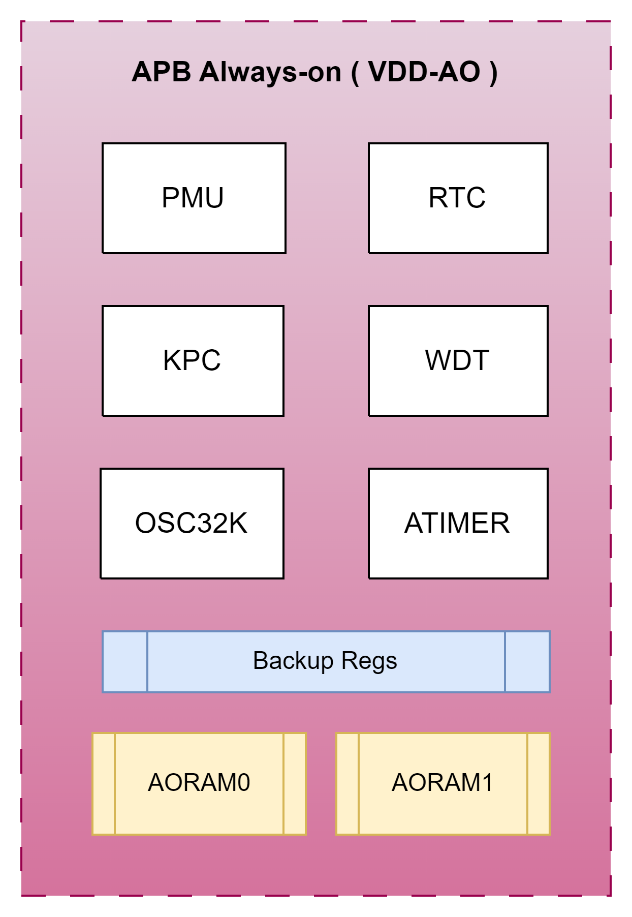
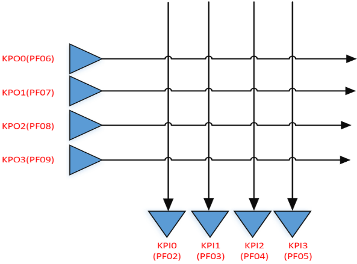
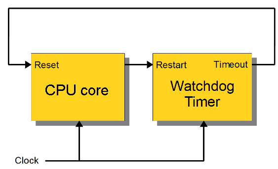

The Always-On (AO) power domain manages the power-on sequence and remains powered in all operating modes until the chip is completely shut down. It handles activity monitoring to wake up the SoC whenever needed, and manages power supply sequencing during initial power-on or any power mode transition.

The AO domain contains the following logic blocks:
PMU — Power management unit. Controls power domains of the SoC subsystem, manages wake-up triggers to recover from sleep mode, and supports separate trimmings and enables (power-on autoloaded from ReRAM IFR; SW-configurable for debug). See the PMU chapter for full details.
KPC — Keypad controller. Supports keypad function and can wake the chip from low-power mode. Activating this overrides PF0 functions for the respective pins.
RTC — Real-time clock associated with a 32 kHz oscillator (external XTAL or internal RC).
WDT — Watchdog timer. Consistent with the SoC-domain WDT peripheral; see the Watchdog Timer section below.
ATimer — Always-on timer. Consistent with the SoC-domain ATimer peripheral; see the ATimer section below.
BUREG — Backup registers in AO domain. Contents are retained during SoC power-down. Size: 32 bytes. Located at 0x4006_5000–0x4006_501F. Wake-up via interrupt will preserve the contents; wake-up by system reset will clear the contents.
RAM — AO domain RAM. Contents retained during SoC power-down. Split into 2 blocks. Size: 16 KBytes. Located at 0x5030_0000–0x5030_3FFF.
IO PAD — Port F is the special I/O pad group used in the AO domain. PF[1:0] support GPIO and wakeup. PF[9:2] support GPIO and keypad function but do not support wakeup.
The PMU (Power Management Unit) is part of the AO domain and is responsible for managing all SoC power supplies and power-mode transitions.
Full PMU documentation — including the block diagram, regulator descriptions, power mode control flow, and all AO control register descriptions — is covered in the PMU chapter.
The RTC uses a 1 Hz clock signal (CLK1HZ) to increment a counter in one-second intervals, supporting real-time clock and basic alarm functionality in software.
After reset, values must be written to the Load Register (RTC_LR) and Match Register (RTC_MR). The counter increments by 1 on the rising edge of CLK1HZ. When the counter matches the match register and the interrupt is not masked, an interrupt is generated. The interrupt is cleared by writing 1 to RTC_ICR.
32-bit match register. An equivalent match value is derived and compared with the counter in the CLK1HZ domain to generate the interrupt. Reads return the last written value.
The keypad controller supports a 4×4 keyboard matrix using 4 KPO (output) rows and 4 KPI (input) columns. It monitors the keypad array, detects node rise or fall events, and reports status in KPC_SR.
Note that when the KPC mappings are activated, they will override any GPIO configuration for the PF bank. This also impacts the PA pins that are tied to the PF bank - it is important for the system designer & programmer to ensure no conflicts on these pins, otherwise excessive power draw can result during sleep mode.
For example, if PA0 is configured to drive high, the KPC will drive PF9 (regradless of whether KPO3 is used by the system or not), and this combination will effectively short the high-drive of PA0 onto the KPC’s low-pulse scan of the keyboard matrix.

Node ID mapping:
KPI0
KPI1
KPI2
KPI3
KPO0
0
1
2
3
KPO1
4
5
6
7
KPO2
8
9
10
11
KPO3
12
13
14
15
Port F (PF9–PF2) is dedicated to the keypad function. Use the AO_IOX and AO_PADPU registers for function selection and pull-up configuration.
Clock source is clk32k, divisible to 1 ms via KPC_CFG1.
Keypad sampling timing is configured via KPC_CFG2:
All other fields (PVAL, PEN, ONES, MODE, IRQEN, RST, EN) are the same as TIMER_CFG_LO but apply to Timer Hi. Note: CASC bit [31] is only present in TIMER_CFG_LO.
The Watchdog Timer (WDT) detects software faults by automatically generating a system reset or interrupt if the CPU fails to service the watchdog within a programmed interval.

Time-out mode: If the CPU does not restart the watchdog within the configured interval, the WDT asserts a reset signal to the ARM core.
Feeding the dog: Software must periodically write to WDT_CLR to restart the counter. Failure to do so within the interval causes a core reset.